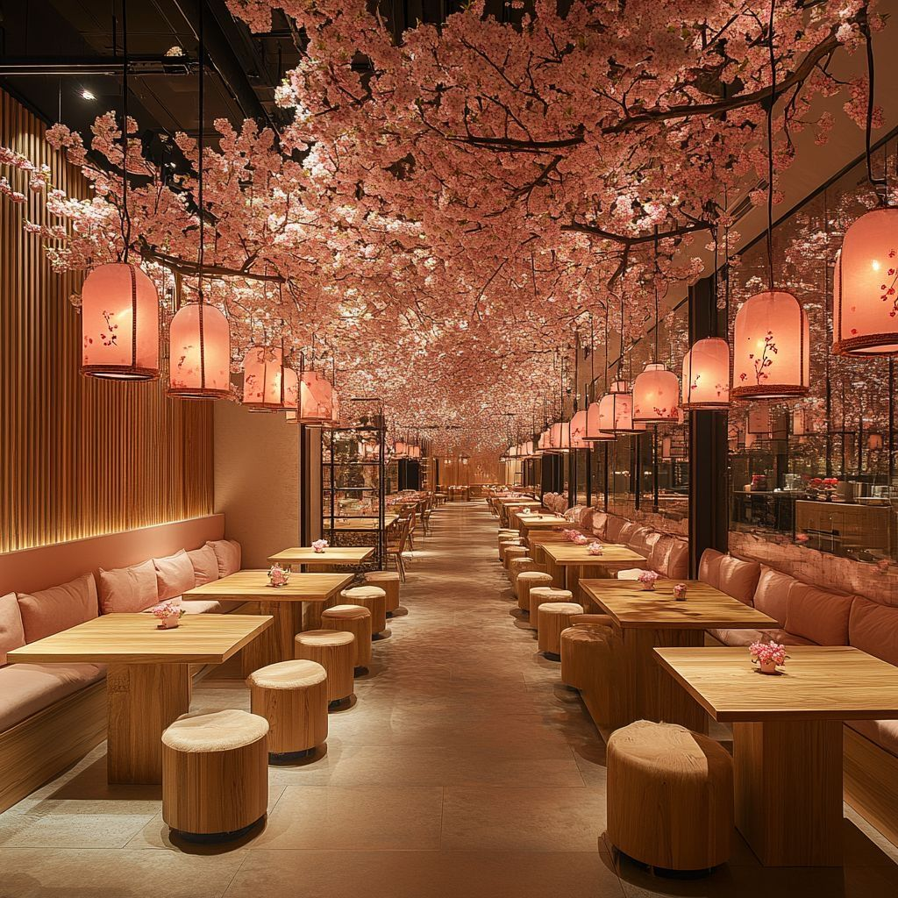

Check out our menu and discover the perfect bowl of ramen for you!

Taste the long authentic flavors of our ramen, where every ramen tells a long story of tradition and passion.
Behind every bowl is our chef, who has spent more than a decade working in our ramen shops and perfecting the craft of making authentic ramen. Through years of hands-on experience, they have learned that great ramen comes from patience, consistency, and attention to every detail, from slowly simmering the broth to preparing each bowl with care. For our chef, cooking is more than just a job. It is a passion built on years of dedication and a deep respect for the traditions of ramen. Every bowl we serve reflects that journey and the commitment to sharing a genuine ramen experience with every guest.
We believe great ramen cannot be rushed. It comes from patience, consistency, and attention to every detail, broths simmered for hours to extract deep, balanced taste, noodles made to the right texture, and toppings prepared fresh daily. We follow time-honored methods while refining each process to ensure every bowl tastes as it should, warm, comforting, and full of character. Our goal is simple, serve ramen that feels genuine, satisfying, and true to its roots.
Quality starts with what goes into the pot. We carefully select our ingredients, sourcing fresh vegetables, premium meats, and authentic seasonings from trusted suppliers. Our noodles are made with high-quality flour and water, shaped to hold broth perfectly. Even our soy sauce, miso, and spices are chosen to match traditional standards, so every component works together to create the best possible flavor.
